When Marnie was There
思い出のマーニー
(Marnie of [My] Memories)
2014 - 103 Min
思い出のマーニー
(Marnie of [My] Memories)
2014 - 103 Min
When Marnie Was There is a 2014 Japanese animated psychological drama film co-written and directed by Hiromasa Yonebayashi, known for his work on "The Secret World of Arrietty." Produced by the renowned Studio Ghibli and distributed by Toho, this film is an adaptation of Joan G. Robinson's 1967 novel of the same name.
The story follows Anna Sasaki, a shy and artistic young girl who is sent
to stay with relatives in a small town located in the Kushiro wetlands
of Hokkaido. While exploring the area, Anna discovers an old, abandoned
mansion known as the Marsh House, where she encounters Marnie, a
mysterious young girl. The two girls quickly form a deep and unique
connection, their friendship blurring the lines between fantasy and
reality.
As Anna is drawn back to the Marsh House time and again, she gradually
uncovers the truth about Marnie and the secrets she holds. This journey
leads Anna to profound revelations about her own life, including her
family and her experiences in foster care.
 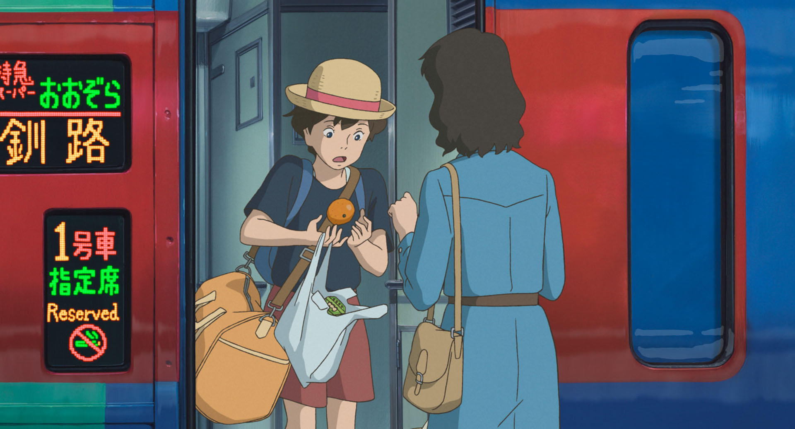
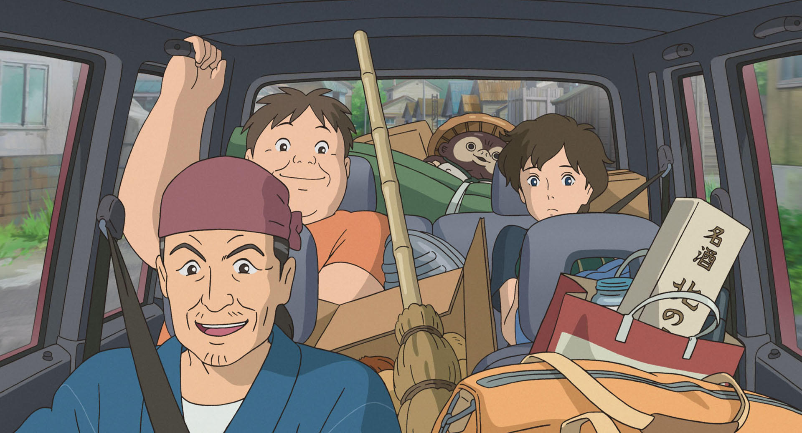
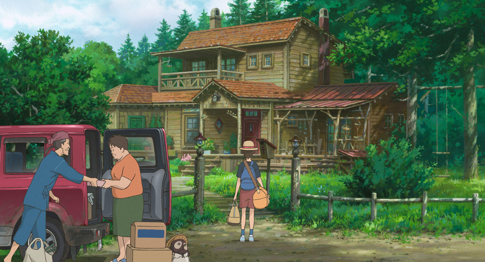
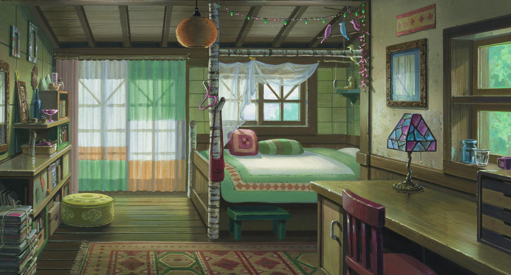
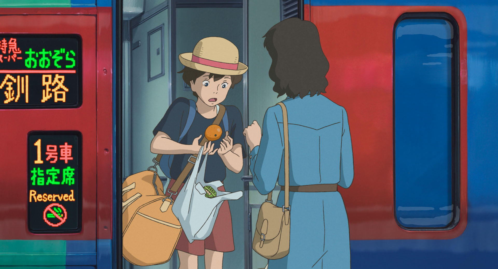
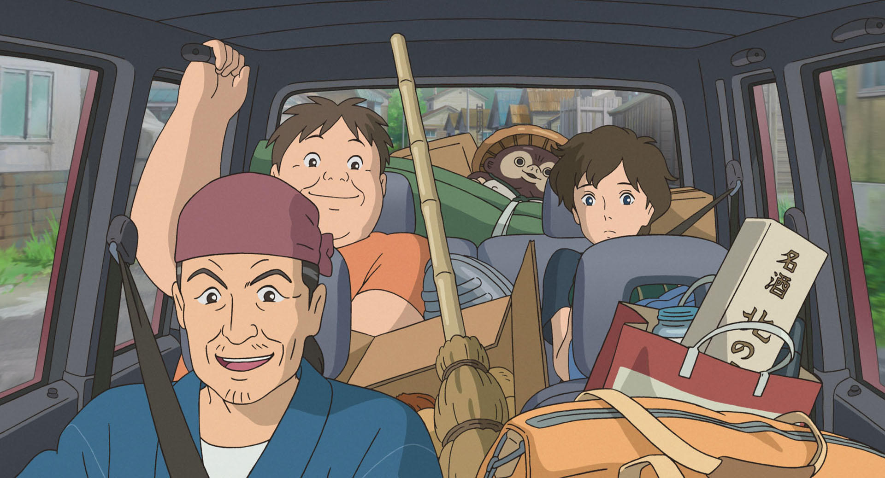
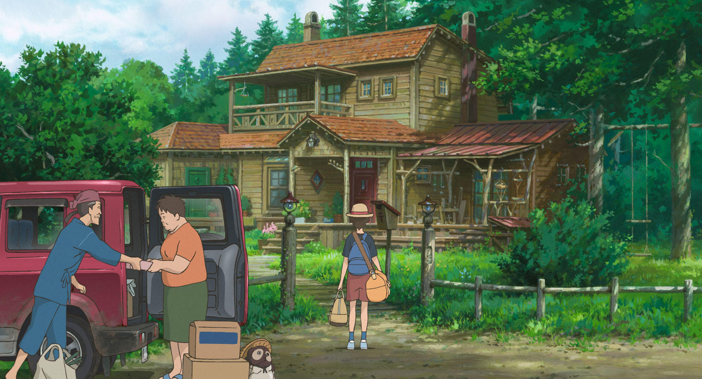
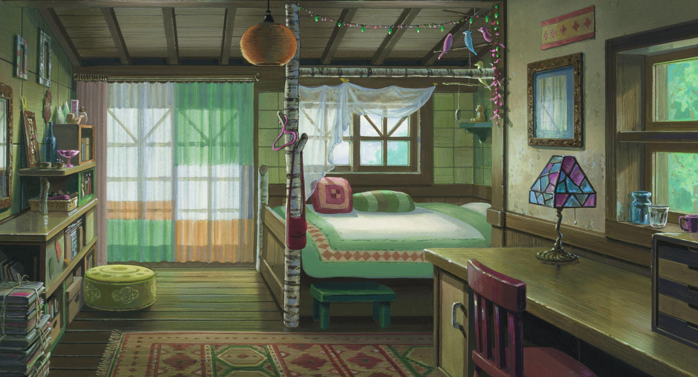

 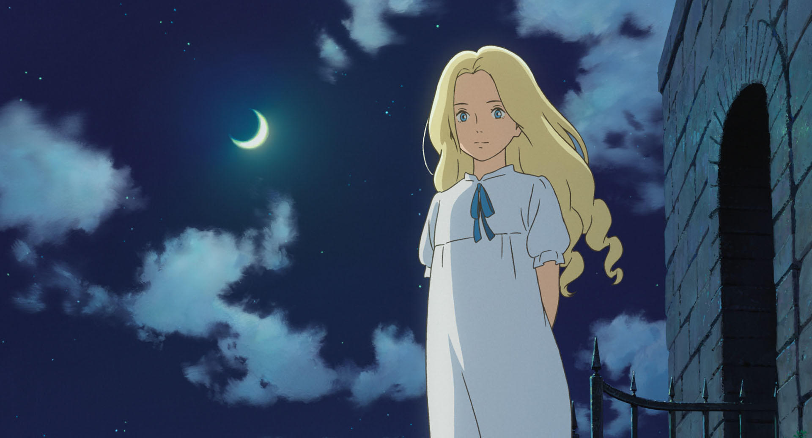
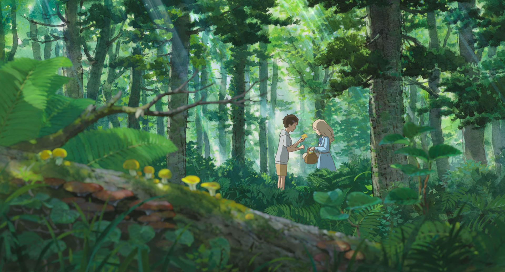
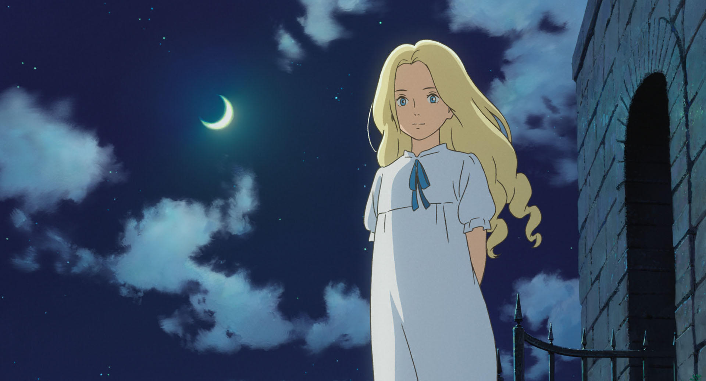
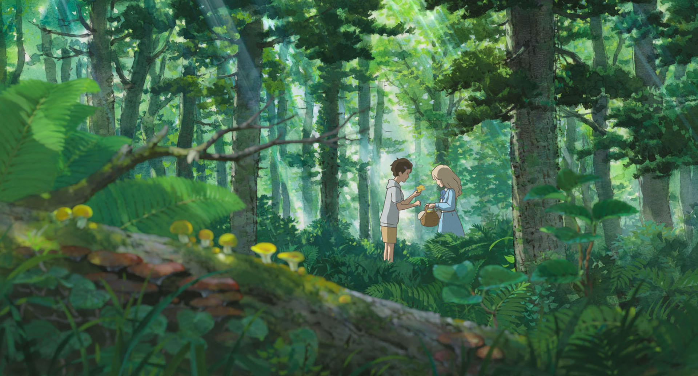

The film's atmospheric, "Ghibli Gothic" aesthetic, with its moonlit
seascapes and hauntingly beautiful orchestral score, creates a dreamlike
mood that builds to a powerful and emotional climax.
When Marnie Was There is a poignant
exploration of memory, identity, and the bonds that transcend time,
making it a distinctive and memorable entry in Studio Ghibli's acclaimed
filmography.